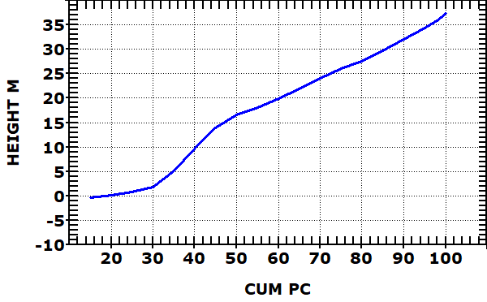
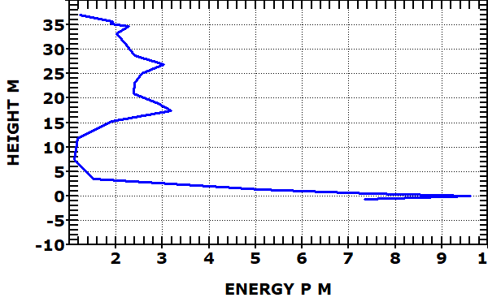
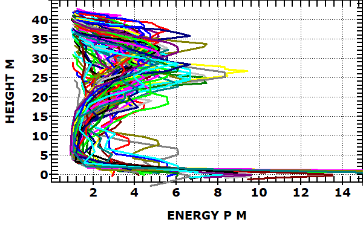

The Level 2 data from LVIS stores the waveform as cumulative distribution, with the height where various percentage of the return energy are reached.
 |
The 0 height is the ZG elevation recorded. The next value is RH10, and there is a return every 5%, with addition values for 96 %, 97%, 98% and 99% to tease out the structure of the uppermost canopy. |
 |
The software can tease out an approximation of the actual waveform, with units of percentage of return energy per meter. The peaks here might correspond with the discrete returns from a traditional lidar survey, and different canopy levels. Triple canopy is a beloved term from infantry soliders in SE Asia. |
 |
Mulitple waveforms can be plotted. The differences in
the structure will determine how many waveforms can be plotted before
the plot becomes impossible to interpret. This data from Gabon is triple canopy jungle, which this data hints at but would b easier to see with fewer waveforms. |
Last revision 3/22/2022